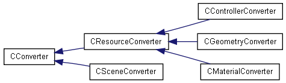

Main Page
Classes
Related Pages
Class List
Class Hierarchy
Class Members
cologre Graphical Class Hierarchy
Go to the textual class hierarchy

Generated on Thu Apr 10 12:57:07 2008 for cologre by
1.5.4

 1.5.4
1.5.4